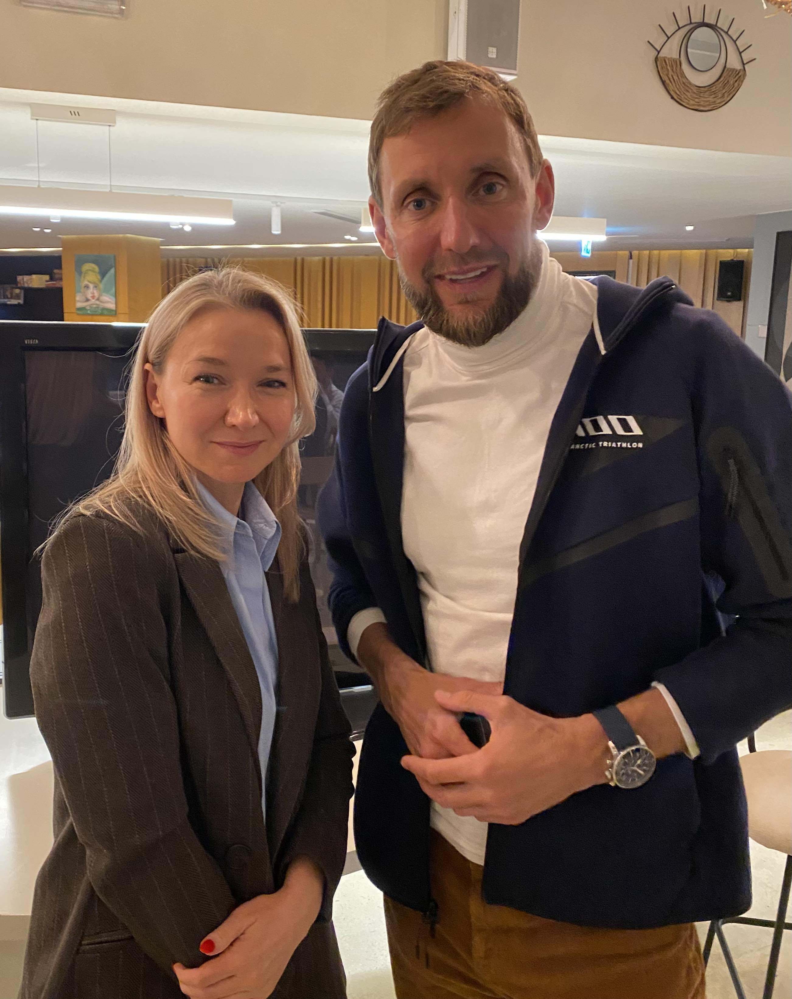

Σήμερα, το Ironman είναι ένας παγκόσμιος οργανισμός. Χιλιάδες αγώνες, εκατομμύρια δολάρια σε έσοδα, και το αδιαμφισβήτητο σύμβολο του αθλητισμού αντοχής. Αλλά πριν 48 χρόνια, στις 18 Φεβρουαρίου 1978, ήταν απλά μια συγκέντρωση 15 εκκεντρικών στην παραλία Waikiki.
Δώδεκα από αυτούς τερμάτισαν. Ο νικητής πήρε ένα τρόπαιο συγκολλημένο από παλιούς σωλήνες. Ο τελευταίος πήρε μια μπίρα.
Ξεκίνησε με Καβγά σε Μπαρ
Τη δεκαετία του 1970, η κοινότητα αντοχής της Χαβάης είχε μια διαρκή συζήτηση: ποιος ήταν πιο σκληρός — οι κολυμβητές, οι ποδηλάτες ή οι δρομείς;
Ο John Collins, αξιωματικός του Αμερικανικού Ναυτικού, είχε ακούσει αρκετά. Η απάντησή του ήταν απλή: «Γιατί δεν κάνουμε και τα τρία;»
Η κολύμβηση Waikiki Roughwater Swim (3,86 χλμ). Ο ποδηλατικός αγώνας Around-Oahu (185 χλμ, μειωμένα σε 180 χλμ για τον αγώνα). Ο Μαραθώνιος της Χονολουλού (42,2 χλμ). Όλα σε μία μέρα. Χωρίς στάσεις.
Οι συμμετέχοντες έλαβαν τρία φύλλα χαρτί με τους κανόνες. Στην τελευταία σελίδα, κάποιος είχε γράψει χειρόγραφα αυτό που έγινε προφητεία:
«Κολύμπησε 3,86 χλμ. Ποδηλάτησε 180 χλμ. Τρέξε 42,2 χλμ. Καυχήσου για όλη σου τη ζωή!»
Κανείς δεν πίστευε ότι θα γίνει παγκόσμιο brand. Κανείς δεν πίστευε ότι θα γίνει θρησκεία.
Η Στιγμή που Άλλαξε τα Πάντα
Η καμπή ήρθε το 1982, και δεν ήταν μια νίκη. Ήταν μια ήττα.
Η Julie Moss ήταν πρώτη στον γυναικείο αγώνα στο Ironman World Championship. Λίγα μέτρα πριν τον τερματισμό, τα πόδια της λύγισαν. Έπεσε. Σηκώθηκε. Ξανάπεσε. Μπουσούλησε τα τελευταία μέτρα μέχρι τη γραμμή τερματισμού. Έχασε την πρώτη θέση λίγες στιγμές πριν το τέλος.
Αλλά όταν το NBC έδειξε αυτά τα πλάνα, εκατομμύρια άνθρωποι δεν είδαν μια χαμένη. Είδαν Απόλυτη Θέληση.
Εκείνη η μετάδοση μετέτρεψε το Ironman από ένα περιθωριακό πείραμα σε παγκόσμιο φαινόμενο. Οι άνθρωποι δεν το είδαν και σκέφτηκαν «δεν θα μπορούσα ποτέ». Το είδαν και σκέφτηκαν «πρέπει να μάθω αν μπορώ».
Πέρα από την Αντοχή — Ένα Σύστημα για τη Ζωή
Σήμερα, το Ironman δεν αφορά απλά το «να αντέξεις». Είναι μια δοκιμασία ωριμότητας.
Το Ironman διδάσκει μια αρχή που λειτουργεί στις επιχειρήσεις, στις σχέσεις, στην υγεία:
Ένα τεράστιο αποτέλεσμα δεν είναι ποτέ μία ηρωική προσπάθεια. Είναι χιλιάδες βαρετά, γκρίζα, πρωινά ξυπνήματα που δεν θέλεις να σηκωθείς από το κρεβάτι. Δεν είναι κατόρθωμα. Είναι σύστημα. Η ικανότητα να τηρείς μια υπόσχεση που έδωσες στον εαυτό σου πριν ενάμιση χρόνο.
Σε έναν κόσμο όπου μπορείς να αγοράσεις ή να αναθέσεις σχεδόν τα πάντα, αυτό παραμένει το μοναδικό μέρος όπου δεν μπορείς να διαπραγματευτείς. Τα προηγούμενα επιτεύγματα δεν μετράνε. Η κοινωνική θέση δεν μετράει. Τα χρήματα δεν μετράνε. Είσαι μόνο εσύ και η απόσταση.
Συνάντηση με τον Ilya Slepov: Από Age Group World Champion του Ironman σε Πρωτοπόρο της Ανταρκτικής

Πριν λίγες μέρες, είχαμε την τιμή να συναντήσουμε τον Ilya Slepov — ένα όνομα που κάθε σοβαρός τριαθλητής γνωρίζει.
Ο Ilya δεν είναι απλά ένας ακόμα finisher του Ironman. Το 2021, έγινε Ironman 70.3 Age Group World Champion στις ΗΠΑ. Είναι πολλαπλός πρωταθλητής και μεταλλιούχος σε αγώνες τριάθλου, μαραθωνίου και multi-sport στη Ρωσία. Είναι επίσης ιδρυτής του RunLab (Лаборатория Бега) — όχι ένα κατάστημα, αλλά ένα ολοκληρωμένο οικοσύστημα για δρομείς, βασισμένο σε βιομηχανική ανάλυση βάδισης (GAIT analysis), εξειδικευμένη επιλογή υποδημάτων, coaching και μια κοινότητα δρομέων κάθε επιπέδου. Το RunLab διαθέτει επίσης κατάστημα στη Λεμεσό, Κύπρο. Ακολουθήστε τον Ilya στο Instagram.
Αλλά αυτό που μας ενθουσίασε περισσότερο ήταν να ακούσουμε για το τελευταίο του project: A100 — το πρώτο extreme ανταρκτικό τρίαθλο στον κόσμο.
A100: Τρίαθλο στην Άκρη του Κόσμου
Προγραμματισμένο για 27 Φεβρουαρίου — 8 Μαρτίου 2027, το A100 θα πραγματοποιηθεί στο νησί King George, κοντά στον ερευνητικό σταθμό Bellingshausen στην Ανταρκτική. Η διαδρομή των 100 χιλιομέτρων περιλαμβάνει:
- 1 χλμ κολύμβηση στον Νότιο Ωκεανό — θερμοκρασία νερού περίπου 0°C
- 66 χλμ ορεινή ποδηλασία σε ανταρκτικό έδαφος
- 33 χλμ τρέξιμο σε συνθήκες που περιλαμβάνουν χιόνι, ομίχλη και ριπές ανέμου μέχρι 25 χλμ/ώρα
Μόνο 50 κορυφαίοι αθλητές από όλο τον κόσμο θα συμμετέχουν. Κάθε διαγωνιζόμενος πρέπει να έχει εμπειρία Ironman ή Ironman 70.3 και να περάσει ιατρικό έλεγχο που επιβεβαιώνει την ικανότητά του να αντέξει ακραίο κρύο και ισχυρούς ανέμους. Κατά τη διάρκεια του αγώνα, οι αθλητές θα ζουν σε ιστιοφόρα αγκυροβολημένα κοντά στον σταθμό.
Αν το Ironman γεννήθηκε από ένα στοίχημα σε μπαρ μεταξύ 15 ατόμων, το A100 είναι η επόμενη εξέλιξη — σπρώχνοντας τα όρια του τι σημαίνει ανθρώπινη αντοχή, σε ένα από τα πιο εχθρικά περιβάλλοντα του πλανήτη.
Τι Σημαίνει Αυτό για τους Αθλητές
Είτε προπονείσαι για το πρώτο σου τρίαθλο, ετοιμάζεσαι για ένα Ironman, ή απλά προσπαθείς να επιστρέψεις στο τρέξιμο μετά από τραυματισμό — το μάθημα από 48 χρόνια ιστορίας Ironman είναι το ίδιο:
Το σώμα ακολουθεί το σύστημα. Η πειθαρχία νικάει το κίνητρο. Η συνέπεια νικάει την ένταση. Και η προετοιμασία — σωματική, ψυχική και δομική — είναι τα πάντα.
Στο Right Track, αυτή η φιλοσοφία καθοδηγεί την προσέγγισή μας στην αποκατάσταση και την αθλητική απόδοση. Δεν θεραπεύουμε απλά τραυματισμούς — χτίζουμε συστήματα που βοηθούν τους αθλητές να επιστρέψουν δυνατότεροι, να προπονηθούν εξυπνότερα και να αποδώσουν στο μέγιστο. Από την πρόληψη τραυματισμών για δρομείς μέχρι την μετεγχειρητική αποκατάσταση ACL, η προσέγγισή μας βασίζεται πάντα σε κριτήρια, τεκμηρίωση και μακροπρόθεσμο σχεδιασμό.
Γιατί στο τέλος, η ερώτηση που θέτει το Ironman είναι η ίδια ερώτηση που θέτει η αποκατάσταση:
Μπορείς να εμφανίζεσαι κάθε μέρα, όταν δεν είναι συναρπαστικό, δεν είναι λαμπερό, και κανείς δεν κοιτάζει; Εκεί χτίζονται τα πραγματικά αποτελέσματα.
Χρόνια πολλά, Ironman. Και στον Ilya Slepov και την ομάδα A100 — θα παρακολουθούμε από την Κύπρο όταν σπρώξετε τα όρια ακόμα πιο πέρα στην Ανταρκτική.
Πότε ήταν η τελευταία φορά που δοκίμασες τον εαυτό σου στα όριά σου; Που πραγματικά δεν ήξερες αν θα τα καταφέρεις;

Antonis Petri, BSc, OMPT
Επικεφαλής Κλινικός & Ιδρυτής στο Right Track Physiotherapy. Επόπτης Κλινικής Πρακτικής στο Πανεπιστήμιο Frederick. Πρώην ερασιτέχνης ποδοσφαιριστής με πάνω από μια δεκαετία στο γήπεδο, εξειδικεύεται στην αθλητική αποκατάσταση και προγράμματα επιστροφής στην κορυφαία απόδοση για αθλητές στην Κύπρο.